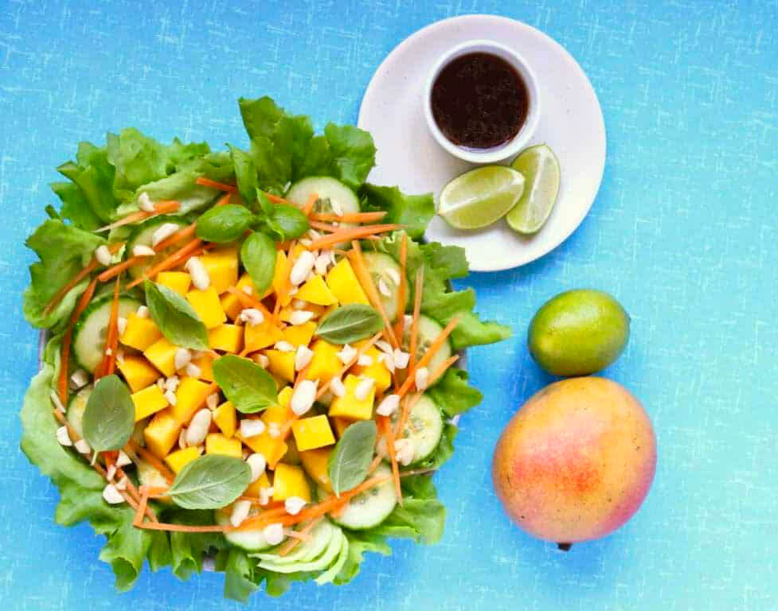

Mango
Cucmber
Ingredients
Instruction: Mix all the ingredients together cucumber,basil, carrots, and mango into a bowl. Grab the cup of the crush peanuts and sprinkel them into the salad. Next, in another small bowl mix the lime juice, tamarine, and olive oil. Once your done with the mixure, drizzel over the salad and enjoy!